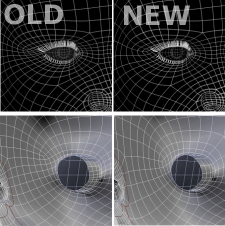
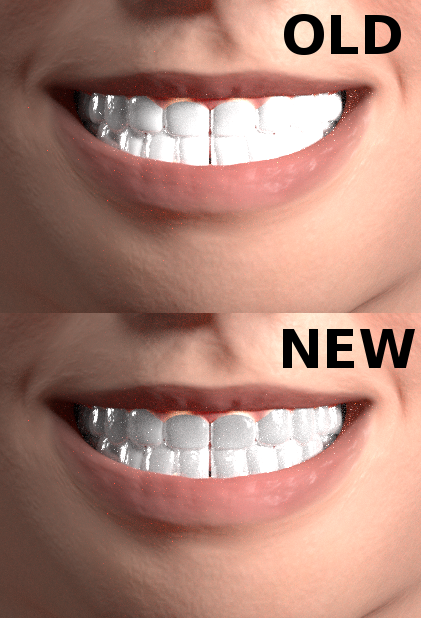
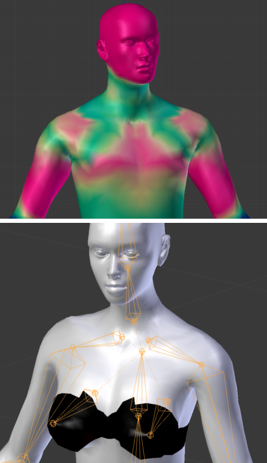

Release notes for ManuelBastioniLAB 1.4.0
Welcome to ManuelbastioniLAB 1.4.0! This new version includes new models, new textures, big improvements in algorithms, new interface and many bug fixes. Have fun!
Models
ManuelBastioniLAB 1.4.0 (download here) introduces five new types for base characters: realistic anime (male and female), elves (male and female) and male dwarf.
The other base types (caucasian, asian and afro) are also improved in terms of accuracy and details of the anatomy.


The anime base models and many related morphings are improved in anatomy and style.

Textures
The UV layout is completely redesigned in order to be symmetrical and to use most of the available texture space. All textures are improved. Details are separated from the diffuse texture: this is a preliminary step for the next evolution of the texture editor. The displacement now is calculated on a HD texture 2048x2048.


Topology
The topology of humans and anime characters is improved and optimized, in order to reduce the possibility of errors in the area around the eyes.

Shaders
Big improvements in the toon shader for Cycles: asymmetrical secondary tone, ambient occlusion, water-colour effect and asymmetrical reflection. Improvements in teeth shader.


Proxy system
The proxy system permits to fit any mesh after an initial calibration on the default character. Now the implementation is more stable: it uses barycentric_transform instead of inverse matrix.
Also after the calibration for a specific base type, the proxy can be saved in blend format and appended to any scene that includes a derived character: It will work automatically without need to be recalibrated.
The interface is now very simple, and in most of cases the whole fitting is matter of one click only.
The video below (published on the official Youtube channel) was created during the development of the tool and shows a basic example of proxy usage (fitting of some spheres).
Rigging
In version 1.4 there is a big improvement in the rigging of upper torso, in particular in the neck area. Also now all female characters have a special breast rigging, useful to simulate clothes push, gravity, etc..

Also, in version 1.4, the pose system will use the Blender corrective smooth modifier by default.

More new features
- New poses in the pose library
- Now the anime characters can save the dermal texture
- Now the finalize process can automatically save all the images used in the shader
- Added Torso_SizeY option
Features improvement
- Improved algorithm of random generator, with some bug fixed
- Improvement of poses library
- Better calibration of studio lights
- Improvement of female breast morph
- Improved muscles in male bodybuilder
- Improved the cheek side crease morphing
- Improved feet shape
GUI usability
- 1.4.0 uses new collapsable buttons to reduce the screen space used by the GUI.
- Now meta parameters show the current age, fat and mass info
- Now the export buttons are contained in the contextual tab
Code improvement
- Now the lab is compatible with Blender 2.76
- Now the system softly handles the error of an humanoid wrongly renamed
- Now the system softly handle the errors of libraries not found
- The blend library is optimized from 100 MB to 30 MB of space
- Improved the bounding box system
- Optimized textures database and morphs data
- Now material are correctly imported reading native json format
- Now the GUI code is even more separated from the technical code
Bug fixes
- Fixed a bug related to the integration in Blender undo system
- Fixed the cheek mass-tone meta parameter.
- Fixed some morphing expressions
- Fixed a bug in expression "kiss"
- Fixed error in toracic curve
- Fixed error in torso size Y
- Fixed error in waist size.
- Fixed error in pelvis size X
- Fixed errors in afro male nose
- Fixed bug in metaparameters cheeks